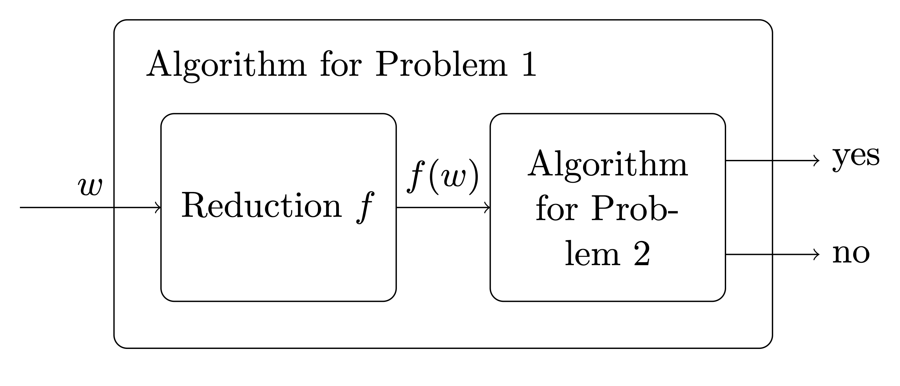

On NP and related concepts
Definition 1 (Decision problem) Given a set of inputs I, a decision problem A is a subset of I. (The problem associated with A is the problem of deciding wether a given input x is in A or not.)
Definition 2 (decidable in time f) Given a function f\colon \mathbb N\to\mathbb N, a decision problem P with input set I is decidable in time f if there exists an algorithm A\colon I\to\{0,1\} such that for all x\in I,
- the cost of A(x) is O(f(|x|)), where |x| is the number of symbols (e.g., bits) of a standard encoding of x. and
- x\in P \iff A(x)=1.
Some important deterministic time complexity classes are the following.
Given a function f\colon \mathbb N\to \mathbb N, the class \mathsf{TIME}(f) is the set of decision problems P that are decidable in time f:
\mathsf{TIME}(f) = \{P \mid P \text{ is decidable in time } f\}
It is known that \mathsf{TIME}(n^a)\subsetneq \mathsf{TIME}(n^b) if and only if a < b. (This is a special case of the Time Hierarchy Theorem that you might see in some more advanced courses, perhaps.)
The class \mathsf{PTIME}, or \mathsf{P}, (polynomial time) is the union of all polynomial time classes: \mathsf{PTIME} = \bigcup_{k\in \mathbb N} \mathsf{TIME}(n^k)\ .
The class \mathsf{EXP} (exponential time) is the union of all exponential classes:
\mathsf{EXP} = \bigcup_{k\in \mathbb N} \mathsf{TIME}(2^{n^k})\ .
Nondeterminism and \mathsf{NP}
The class \mathsf{NP} (nondeterministic polynomial time) is the set of all problems which can be verified in deterministic polynomial time.
Definition 3 (\mathsf{NP}) A decision problem A is in \mathsf{NP} if and only is there is an integer k\in \mathbb N and an algorithm V (called verifier) such that
- The output of V is Boolean (true/false), V takes as input strings of the form (x,y) and runs in polynomial time (w.r.t. |x|+|y|);
- if x\in A then there is a string c (called certificate) such that |c|\leq |x|^k and V with input (x,c) returns true;
- if x \notin A, for every string c with |c|\leq |x|^k, V on input (x,c) returns false .
\mathsf{P} vs \mathsf{NP} problem
It is not too difficult to see that \mathsf{P}\subseteq \mathsf{NP}\subseteq \mathsf{EXP}\ .
On the other hand, again by the Time Hierarchy Theorem, we know that \mathsf{P}\neq \mathsf{EXP}. So either \mathsf{P}\neq \mathsf{NP} or \mathsf{NP}\neq \mathsf{EXP} or both. But, which is the case? With the current knowledge the following scenarios below are perfectly possible:
- \mathsf{P}\neq \mathsf{NP} and \mathsf{NP}\neq \mathsf{EXP},
- \mathsf{P}\neq \mathsf{NP} and \mathsf{NP}= \mathsf{EXP},
- \mathsf{P}= \mathsf{NP} and \mathsf{NP}\neq \mathsf{EXP},
It is also possible that \mathsf{P}=\mathsf{NP} and \mathsf{P}\neq \mathsf{NP} are both perfectly coherent with all the commonly accepted axioms of mathematics…
Most computer scientist believe that \mathsf{P}\neq \mathsf{NP} is likely to be true (actually most computer scientists believe something stronger, see below). In any case no-one has any idea on how to prove it.
Deciding whether \mathsf{P}= \mathsf{NP} or \mathsf{P}\neq \mathsf{NP} is known as the \mathsf{P} vs \mathsf{NP} problem. It is one of the Millennium Problems of the Clay Mathematics Institute.
Related to the \mathsf{P} vs \mathsf{NP} problem are the 5 worlds by Russell Impagliazzo:
- Algorithmica
- \mathsf{P} = \mathsf{NP} via some explicit algorithm or something morally equivalent like fast probabilistic algorithms for \mathsf{NP}.
- Heuristica
- \mathsf{NP} problems are hard in the worst case but easy on average.
- Pessiland
- \mathsf{NP} problems hard on average but no one-way functions exist. We can easily create hard \mathsf{NP} problems, but not hard \mathsf{NP} problems where we know the solution. This is the worst of all possible worlds, since not only can we not solve hard problems on average but we apparently do not get any cryptographic advantage from the hardness of these problems.
- Minicrypt
- One-way functions exist but we do not have public-key cryptography.
- Cryptomania
- Public-key cryptography is possible, i.e. two parties can exchange secret messages over open channels.
Impagliazzo does not guess which world we live in. Most computer scientists would say Cryptomania or Minicrypt.
Polynomial-time reductions
Definition 4 Let A and B be two decisional problems with input sets I and I', respectively. We say that A reduces to B in polynomial time (A\leq_p B) if there exists a polynomial time algorithm that computes a function f : I \to I' such that x\in A \iff f(x) \in B.
Schematically a polynomial (many-one) reduction between A_1 and and A_2 can be though as follows. Let Problem i be the problem of deciding whether an input is in A_i. A many-one reduction gives a way to construct an algorithm to solve Problem 1 given an algorithm for Problem 2 and a polynomial-time function f to convert inputs.

Theorem 1
- The binary relation \leq_p is a preorder (i.e. it is reflexive and transitive).
- \mathsf{P} is closed downwards w.r.t. \leq_p, that is if A\leq_p B and B\in \mathsf{NP}, then A\in \mathsf{NP}.
- \mathsf{NP} is closed downwards w.r.t. \leq_p, that is if A\leq_p B and B\in \mathsf{P}, then A\in \mathsf{P}.
- The problems in \mathsf{P} are the easiest w.r.t. \leq_p, that is if A\in \mathsf{P}, then for any decision problem B it holds that A\leq_p B.
\mathsf{SAT} and \mathsf{NP}-completeness
Definition 5 (Propositional formula) A propositional formula is an expression involving parentheses, the constants true and false, Boolean variables x_1,…,x_n which might take values true or false, their negations \bar x_1,…,\bar x_n and the connectives \lor(or, disjunction) and \land (and, conjunction).
For example,
(x\lor y\lor z) \land (\bar x\lor \bar z) is a propositional formula.
Definition 6 (satisfiable) A propositional formula F is satisfiable iff there exists an assignment of truth values to its variables such that the formula evaluates to true. For instance, the formula above is satisfiable for instance setting x= true and z= false (and y arbitrarily).
Not every propositional formula is satisfiable, for instance x\land \bar x is not satisfiable. The set of all satisfiable propositional formulas is
\mathsf{SAT} = \{\varphi \mid \varphi \text{ is a satisfiable propositional formula}\}\ .
Theorem 2 (Cook-Levin’s Theorem) \mathsf{NP} = \{A\mid A\leq_p \mathsf{SAT}\}\ .
A decision problem B is \mathsf{NP}-complete if \mathsf{NP} = \{A\mid A\leq_p B\}. In other words, Cook-Levin’s Theorem says that \mathsf{SAT} is \mathsf{NP}-complete.
The class of all \mathsf{NP}-complete problems is called \mathsf{NPC}.
If we only know that \mathsf{NP} \subseteq \{A\mid A\leq_p B\}, then B is \mathsf{NP}-hard. In particular, B is \mathsf{NP}-complete if and only if B is \mathsf{NP}-hard and B\in \mathsf{NP}.
Theorem 3 If A\leq_p B and A is \mathsf{NP}-hard, then B is \mathsf{NP}-hard.
If we believe that \mathsf{P}\neq \mathsf{NP}, then we must also believe that there are problems in \mathsf{NP} which are neither in \mathsf{P} nor \mathsf{NP}-complete. This is the statement of the following theorem.
Theorem 4 (Ladner’s theorem) If \mathsf{P}\neq \mathsf{NP}, then \mathsf{NP}\setminus (\mathsf{P}\cup\mathsf{NPC})\neq \emptyset.
Typical problems that are in \mathsf{NP} but for which we do not know any polynomial-time algorithm and at the same time we do not know whether they are \mathsf{NP}-complete (probably they are not) are the following:
- decision versions of factoring,
- the discrete logarithm,
- other common cryptographic assumptions.